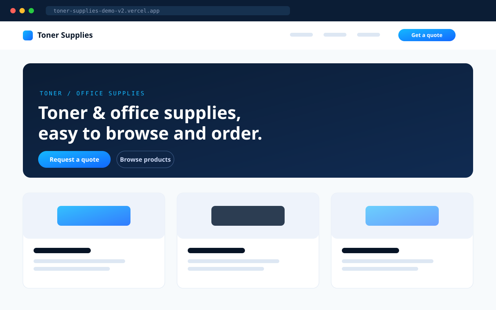

Office & toner supplies · Demo build
Toner Supplies Website
A clean demo website for an office and toner supply business, built to make browsing products and requesting a quote easier.
- Clear product browsing
- Stronger trust signals
- Simple quote flow
Live preview
View Preview →